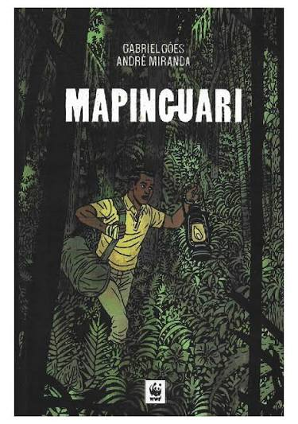

HISTÓRIA EM QUADRINHOS
Mapinguari — HQ
André Miranda · Ilustrações de Gabriel Góes
Sinopse
José, um jovem que deixou o seringal onde cresceu para trabalhar em Rio Branco, enfrenta um conflito quando seu emprego ameaça a comunidade de sua família. Ao retornar à Amazônia, redescobre suas raízes, o folclore, a cultura indígena e a importância da preservação da floresta.
⬇ DOWNLOAD